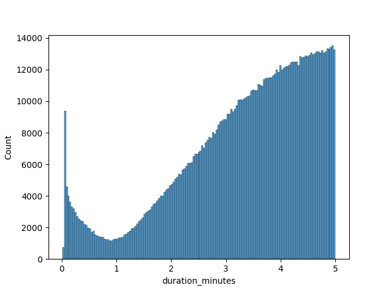

Trips
Trip duration
Trip duration times range from a few seconds to many days. With most them falling under around 120 minutes.


Round-trips
Flagging trips with the same start and end station as round trips reveals some insigts.
Round trips are much less common than one-way trips.
SELECT
(station_end_id == station_start_id) AS round_trip,
count(*) as count
FROM trips_raw
GROUP BY round_trip;
┌────────────┬─────────┐
│ round_trip │ count │
│ boolean │ int64 │
├────────────┼─────────┤
│ false │ 8434689 │
│ true │ 320463 │
└────────────┴─────────┘

Closer inspection of round trips reveals a double mode.

Some possible causes:
- short trips:
- users changing their mind about using the bike
- users testing the app functionality and/or the bikes themselves
- users taking short trips around the block
- average trips:
- users running errands
- taking longer pleassure routes
Trips under 1 minute
There is an abundance of trips under 1 minute.

SELECT
(station_end_id == station_start_id) AS round_trip,
count(*) as count
FROM trips_raw
WHERE duration_ms / (1000 * 60) < 1
GROUP BY round_trip;
┌────────────┬───────┐
│ round_trip │ count │
│ boolean │ int64 │
├────────────┼───────┤
│ false │ 2148 │
│ true │ 67117 │
└────────────┴───────┘
Removing the round trips of less than 1 minute we get a more natural distrubution.

Without more information it's impossible to discern the quality of the remaining 2 thousand trips records. Some posibilities:
- The two stations are really close and make it possible to get between them in less than a minute.
- Data quality issue, assigning the wrong ID to the end station.
Going forward I will only focus on trips with durations:
- less or equal to 60 minutes
- different start and end locations if
duration_minutesis less than 1 minute.
DELETE FROM trips
WHERE
duration_minutes > 60
OR
(duration_minutes < 1 AND station_start_id == station_end_id);